Introduction to R for Applied Epidemiology and Public Health
Welcome
Welcome to the live course “Introduction to R for applied epidemiologists”, offered by Applied Epi - a nonprofit organisation that offers open-source tools, training, and support to frontline public health practitioners.

Data visualization
This exercise focuses on scales and themes in {ggplot2}.
Format
This exercise will guide you through a set of tasks.
You should perform these tasks in RStudio and on your local
computer.
Getting Help
There are several ways to get help:
- Look for the “helpers” (see below)
- Ask your live course instructor/facilitator for help
- Ask a colleague or other participant in the course for tips
- Post a question in Applied Epi Community in the category for questions about Applied Epi Training
Here is what those “helpers” will look like:
Click to read a hint
Here you will see a helpful hint!
Click to see a solution (try it yourself first!)
linelist %>%
filter(
age > 25,
district == "Bolo"
)Here is more explanation about why the solution works.
Quiz questions
Please complete the quiz questions that you encounter throughout the tutorial. Answering will help you to comprehend the material, and will also help us to improve the exercises for future students.
To practice, please answer the following questions:
Icons
You will see these icons throughout the exercises:
| Icon | Meaning |
|---|---|
| Observe | |
| Alert! | |
| An informative note | |
| Time for you to code! | |
| Change to another window | |
| Remember this for later |
Learning objectives
In this exercise you will:
- Practice adjusting the scales commands within {ggplot2}
- Make adjustments to the themes of ggplots
- Save ggplots as PNG files
Prepare
Prepare your script
Open the R project, as usual, and your script “ebola_analysis.R”.
Load packages
Add the following R packages to your {pacman} command at the top of your script:
- {RColorBrewer}
- {viridis}
- {scales}
Run the code to install your R packages.
Run previous code
If you left RStudio since the previous exercise, clear your
environment and then re-run all code in your script in order to again
use the cleaned surv dataset. If you encounter errors, you
always have the option of importing the clean dataset from “data/clean”
subfolder.
Color scales
Scale commands replace defaults of how the aesthetic mappings manifest, such as:
- Which colors or shapes to display
- The min/max of point sizes
- The min/max and frequency of axes breaks
As a generic formula, these commands are written as:
scale_AESTHETIC_METHOD().
scale_: this prefix never changes
- AESTHETIC:
_fill_,_color_,_x_,_y_, etc.
- METHOD:
_continuous(),_discrete(),_manual(),_date(), etc.
Some examples of scale commands:
| You want to adjust | Scale command |
|---|---|
| continuous y-axis | scale_y_continuous() |
| date x-axis | scale_x_date() |
| categorical x-axis | scale_x_discrete() |
| fill, continuous | scale_fill_continuous() |
| fill, continuous | scale_fill_gradient() |
| color, manual assignment | scale_color_manual() |
Here we show two different ways to create a continuous color gradient.
- The
scale_*_continuousfunctions work with pre-built gradient palettes
scale_*_gradient()creates a 2 color gradient
scale_*_gradient2allows you to also set a midpoint color between these two
scale_gradient_n()allows you to create more complex palettes.
More information on these functions is available here.
Default color scales
ggplot(
data = surv,
mapping = aes(
x = district,
fill = gender)) +
geom_bar()Above, the fill of a bar plot uses the default colors and
axis breaks. We can adjust the elements of this plot with a
scale_AESTHETIC_METHOD() function added (+) to
the end of our ggplot()
Adjust fill
Here we adjust the fill color of the bars manually
(scale_fill_manual()). We provide assignments to the values
in our dataset (“male” and “female”) within a vector (c()).
To assign a color to the NA values we need to specify this
with the separate argument na.value =
ggplot(
data = surv,
mapping = aes(
x = district,
fill = gender)) +
geom_bar() +
scale_fill_manual(
values = c(
"male" = "violetred",
"female" = "aquamarine"),
na.value = "green")Here we have chosen some ugly colors to highlight what we are changing! Try changing the color for “male” to “dodgerblue” and “female” to “tomato” for a nicer color combination in the code below. Also set NA to be “grey”, a common standard plot color.
Click to see a solution (try it yourself first!)
ggplot(
data = surv,
mapping = aes(
x = district,
fill = gender)) +
geom_bar() +
scale_fill_manual(
values = c(
"male" = "dodgerblue",
"female" = "tomato"),
na.value = "grey")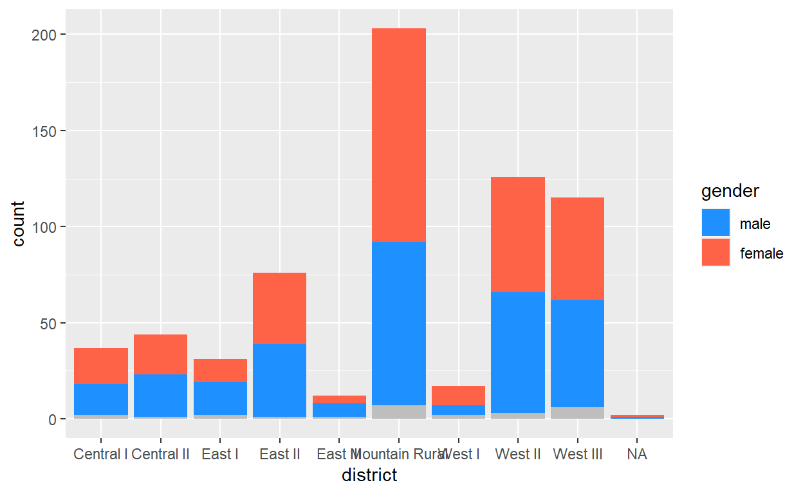
Note that the character values you put in the vector c()
need to match the vales in the data exactly (e.g. “Male” is NOT
the same as “male”).
Built-in color scales
{ggplot2} and the package {RColorBrewer} offers a number of pre-configured palettes for color scales that are continuous, discrete, diverging, etc.
As we are working here with discrete data we can use the function
scale_fill_brewer() to access the following palettes rather
than specifying our own colors:
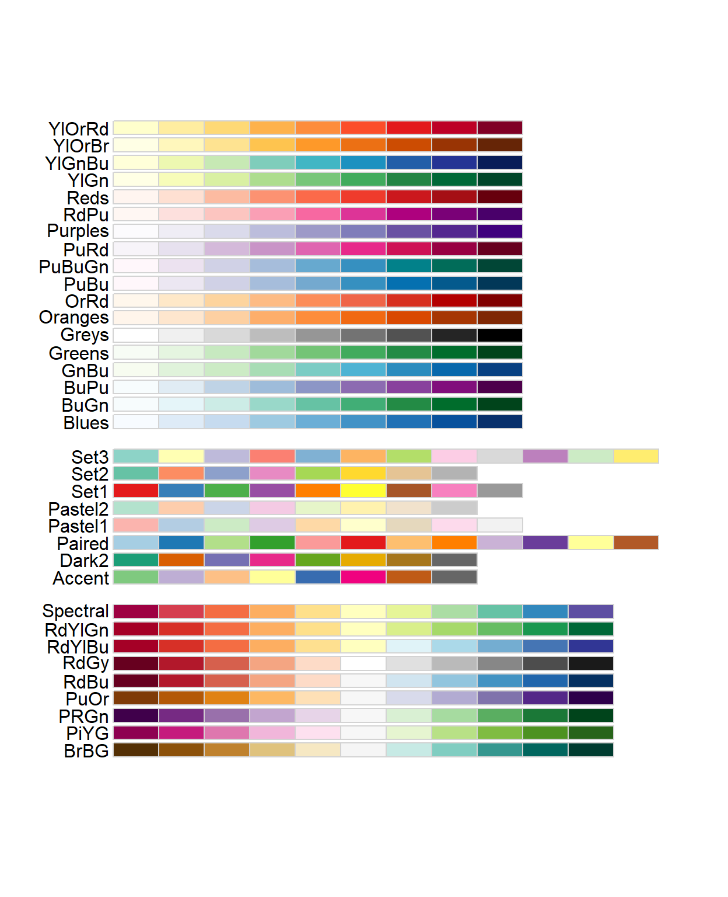
As we are working with a discrete scale, the middle group of color palettes are most appropriate. Below we select the palette “Pastel2”, and specify that missing values should be “grey”.
ggplot(
data = surv,
mapping = aes(
x = district,
fill = gender)) +
geom_bar() +
scale_fill_brewer(palette = "Pastel2",
na.value = "grey")A color-blind friendly palette is available as well. This comes in
discrete and continuous forms scale_fill_viridis_d() and
scale_fill_viridis_c():
ggplot(
data = surv,
mapping = aes(
x = district,
fill = gender)) +
geom_bar() +
scale_fill_viridis_d(na.value = "grey")Adjust the ggplot command above to use age_cat
instead of gender. How do the brewer and viridis_d
color scales look with more categories?
Continuous color scales
Try applying what you have learned to add a continuous
viridis palette to the following plot. Be aware that here we are dealing
with a color rather than fill aesthetic because we use
geom_point(). It is best practice to also specify an
na.value =
ggplot(
data = surv,
mapping = aes(
x = age_years,
y = wt_kg,
color = temp)) +
geom_point() Click to see a solution (try it yourself first!)
ggplot(
data = surv,
mapping = aes(
x = age_years,
y = wt_kg,
color = temp)) +
geom_point() +
scale_color_viridis_c(na.value = "grey")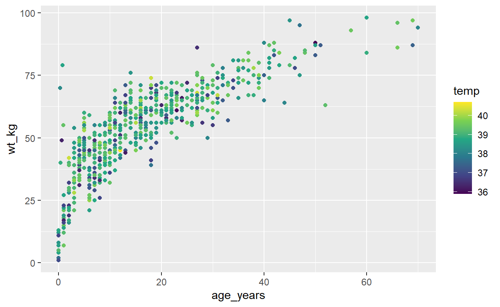
Here are some further resources for you:
Viridis
(try with option = "plasma" or “inferno”), and colorbrewer
palette functions can be added to any ggplot.
Axes scales
We can edit axes in a similar way, with similar commands.
Adjusting Y-axis
In a barplot such as the one below, we have a continuous Y-axis and discrete X-axis. Here we might decide that the counts on the Y-axis are not descriptive enough so we wish to supply our own break points.
ggplot(
data = surv,
mapping = aes(
x = district,
fill = gender)) +
geom_bar() +
scale_fill_viridis_d(na.value = "grey")In scale_y_continuous() we adjust the Y-axis breaks
using seq() to define a numeric sequence.
Try running the command
seq(from = 0, to = 250, by = 25) in the R Console, just to
see the result. Try it again with different argument
values.
Now, add the function scale_y_continuous(). Inside this
function, set the argument breaks = to seq()
as written above.
Click to see a solution (try it yourself first!)
ggplot(
data = surv,
mapping = aes(
x = district,
fill = gender)) +
geom_bar() +
scale_fill_viridis_d(na.value = "grey") +
scale_y_continuous(breaks = seq(from = 0,
to = 250,
by = 25))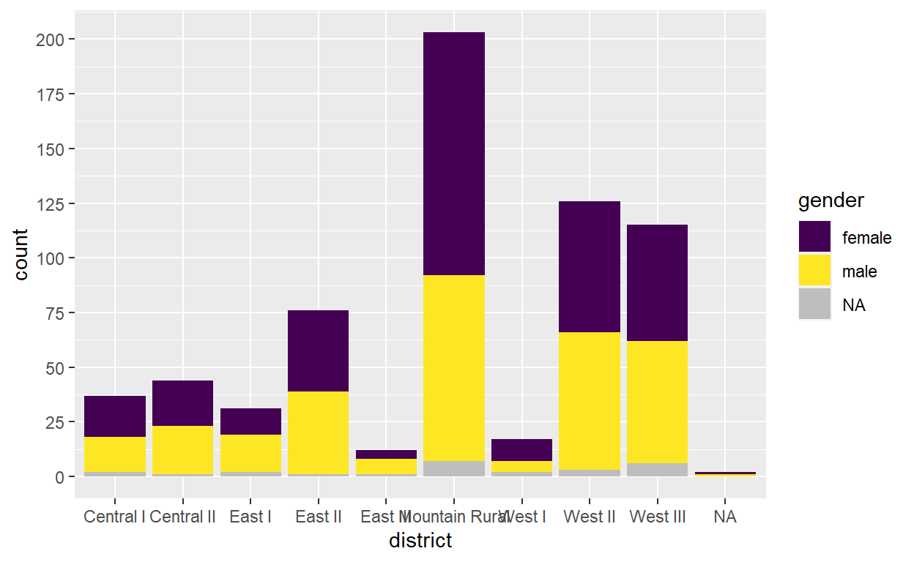
Starting scales at 0
You may have noticed that {ggplot2} has a behavior of expanding your
axis beyond the data, with a gap between the values and the axis at the
bottom. This can be fixed with the axes scales using the
expand = argument.
Using the previous ggplot command, add a second argument to
scale_y_continuous() that is expand = c(0,0).
This is telling ggplot() to start the Y-axis at the plot
coordinates (0,0) with no buffer space.
Click to see a solution (try it yourself first!)
ggplot(
data = surv,
mapping = aes(
x = district,
fill = gender)) +
geom_bar() +
scale_fill_viridis_d(na.value = "grey") +
scale_y_continuous(breaks = seq(from = 0,
to = 250,
by = 25),
expand = c(0,0))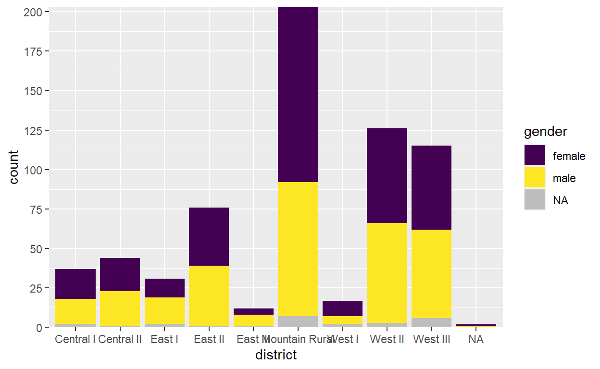
Try applying the same expand = c(0,0) syntax to the
discrete x-axis, by adding scale_x_discrete():
Click to see a solution (try it yourself first!)
ggplot(
data = surv,
mapping = aes(
x = district,
fill = gender)) +
geom_bar() +
scale_fill_viridis_d(na.value = "grey") +
scale_y_continuous(breaks = seq(from = 0,
to = 250,
by = 25),
expand = c(0,0)) +
scale_x_discrete(expand = c(0,0))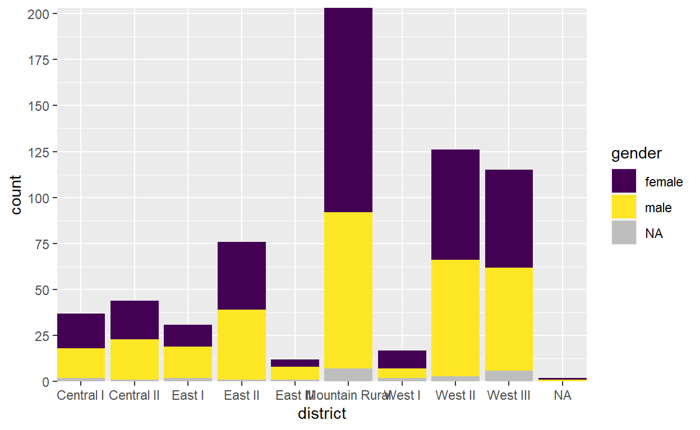
Flip axes
Finally, we can flip the X and Y axes by adding
coord_flip() (with empty parentheses). This is useful in
bar charts so that more discrete value names can be displayed without
overlapping each other on the x-axis.
ggplot(
data = surv,
mapping = aes(
x = district,
fill = gender)) +
geom_bar() +
scale_fill_viridis_d(na.value = "grey") +
scale_y_continuous(breaks = seq(from = 0,
to = 250,
by = 25),
expand = c(0,0)) +
scale_x_discrete(expand = c(0,0))+
coord_flip()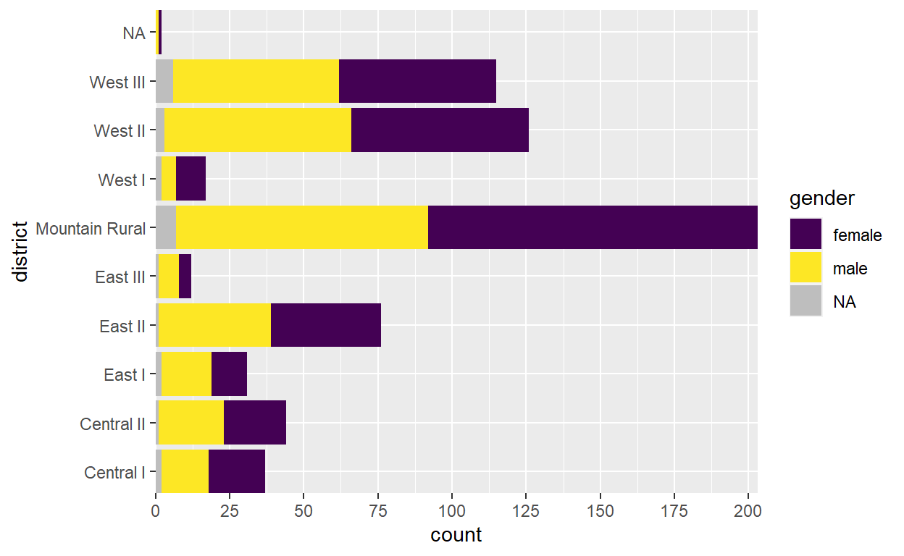
Note that if adjusting the labels with labs() you still
edit x = to adjust the label that now appears on the
y-axis.
Date axis labels
Date axes also have scales that can be adjusted with
scale_*() functions.
The default scale for date axis labels will vary by the range of your data. Here is an example plot:
ggplot(
data = surv,
mapping = aes(x = date_onset)) +
geom_histogram()Adjust axis labels with scale_x_date().
Manual date breaks
Within scale_x_date(), you can use the argument
date_breaks= to provide values like “1 week”, “2 weeks”, or
“3 months”.
Note: these are the axis label breaks, the don’t affect the bins of the histogram (bar widths), We will discuss best practices for setting the binwidths of histograms for epidemic curves in a subsequent module.
Try editing this code so that the date labels appear every 2 months:
ggplot(
data = surv,
mapping = aes(x = date_onset)) +
geom_histogram()Click to see a solution (try it yourself first!)
ggplot(
data = surv,
mapping = aes(x = date_onset)) +
geom_histogram() +
scale_x_date(date_breaks = "2 months")Date axis labels
You (or your supervisor) may not like the date labels appearing as YYYY-MM-DD.
You can specify the date labels format with the additional argument
date_labels =.
This argument accepts a character value (within quotes), constructed using “strptime” syntax - see R documentation for more information on this
For example: the value "%d %b %Y" will change the
display to DD MMM YYYY (note spaces instead of dashes). You can also
trigger a new line with \n, e.g. to move the year below the
day and month.
ggplot(
data = surv,
mapping = aes(x = date_onset)) +
geom_histogram() +
scale_x_date(date_breaks = "2 months",
date_labels = "%d %b \n %Y" )Here is the complete list of strptime abbreviations:
- %d = Day number of month (5, 17, 28, etc.)
- %j = Day number of the year (Julian day 001-366)
- %a = Abbreviated weekday (Mon, Tue, Wed, etc.)
- %A = Full weekday (Monday, Tuesday, etc.)
- %w = Weekday number (0-6, Sunday is 0)
- %u = Weekday number (1-7, Monday is 1)
- %W = Week number (00-53, Monday is week start)
- %U = Week number (01-53, Sunday is week start)
- %m = Month number (e.g. 01, 02, 03, 04)
- %b = Abbreviated month (Jan, Feb, etc.)
- %B = Full month (January, February, etc.)
- %y = 2-digit year (e.g. 89)
- %Y = 4-digit year (e.g. 1989)
- %h = hours (24-hr clock)
- %m = minutes
- %s = seconds
- %z = offset from GMT
- %Z = Time zone (character)
See Epi R Handbook Epicurves and Strings pages for more tips
Auto-efficient date axes
There is also a built-in simplification for date labels using the {scales} package.
Confusingly this is applied using the labels = rather
than date_labels = argument. Assigning
labels = to label_date_short(). This produces
date axis labels that automatically show the least amount of informaton
necessary to convey changes in month, year, etc. It is very nice!
You can read the {scales} documentation here or in your Help pane. It has many useful functions.
ggplot(
data = surv,
mapping = aes(x = date_onset)) +
geom_histogram() +
scale_x_date(date_breaks = "2 months",
labels = label_date_short() )Using the code above, adjust the date_breaks =
value to “2 weeks”. What happens and how does
label_date_short() adjust to account for this?
Display percents
The {scales} package that you just learned about has another useful
function, percent(), that can adjust axes to fluidly
display percents, even though they are decimals in the data.
If you were to modify the values in your data to display the
character symbol “%”, then your values would become characters
themselves! As you know, "36" is different from
36. And on an axis, it will not sort intuitively if it is a
character.
Thankfully, we have the percent() function.
We can easily display proportions as percents with
percent() from scales within
scale_y_continuous().
To test this, let’s create a dataset using group_by()
and summarise() that creates a proportion - the weekly
proportion of cases that have more than 7 days delay between symptom
onset and their report date.
delay_1wk <- surv %>% # begin with surveillance linelist
mutate(diff_1wk = as.numeric(diff) > 7) %>% # create column that is TRUE is diff is greater than 7
group_by(week = floor_date(date_report, "week")) %>% # create column "week" and group by it
summarise( # begin summarise command
cases = n(), # number of cases in the week
delayed = sum(diff_1wk == TRUE, na.rm=T), # number of delayed cases in the week
delayed_pct = delayed / cases) # calculate proportionThis new summary dataset looks like this:
| week | cases | delayed | delayed_pct |
|---|---|---|---|
| 2014-05-11 | 3 | 0 | 0.0000000 |
| 2014-05-18 | 2 | 0 | 0.0000000 |
| 2014-05-25 | 3 | 1 | 0.3333333 |
| 2014-06-01 | 1 | 0 | 0.0000000 |
| 2014-06-15 | 5 | 1 | 0.2000000 |
| 2014-06-22 | 7 | 1 | 0.1428571 |
| 2014-06-29 | 5 | 0 | 0.0000000 |
| 2014-07-06 | 9 | 1 | 0.1111111 |
| 2014-07-13 | 5 | 0 | 0.0000000 |
| 2014-07-20 | 7 | 0 | 0.0000000 |
| 2014-07-27 | 7 | 0 | 0.0000000 |
| 2014-08-03 | 22 | 4 | 0.1818182 |
| 2014-08-10 | 12 | 4 | 0.3333333 |
| 2014-08-17 | 19 | 2 | 0.1052632 |
| 2014-08-24 | 29 | 5 | 0.1724138 |
| 2014-08-31 | 29 | 5 | 0.1724138 |
| 2014-09-07 | 40 | 4 | 0.1000000 |
| 2014-09-14 | 47 | 6 | 0.1276596 |
| 2014-09-21 | 50 | 1 | 0.0200000 |
| 2014-09-28 | 45 | 3 | 0.0666667 |
| 2014-10-05 | 42 | 2 | 0.0476190 |
| 2014-10-12 | 44 | 4 | 0.0909091 |
| 2014-10-19 | 39 | 0 | 0.0000000 |
| 2014-10-26 | 44 | 3 | 0.0681818 |
| 2014-11-02 | 38 | 2 | 0.0526316 |
| 2014-11-09 | 36 | 1 | 0.0277778 |
| 2014-11-16 | 31 | 3 | 0.0967742 |
| 2014-11-23 | 27 | 0 | 0.0000000 |
| 2014-11-30 | 6 | 1 | 0.1666667 |
| 2014-12-07 | 1 | 1 | 1.0000000 |
| 2014-12-21 | 1 | 1 | 1.0000000 |
| NA | 7 | 0 | 0.0000000 |
Write a ggplot command using geom_line() that has the
following settings:
- Uses the
delay_1wkdataset
weekon the X-axis
delayed_pcton the Y-axis
size = 2andcolor = "brown"withingeom_line()
Click to see a solution (try it yourself first!)
ggplot(data = delay_1wk, mapping = aes(x = week, y = delayed_pct))+
geom_line(size = 2, color = "brown")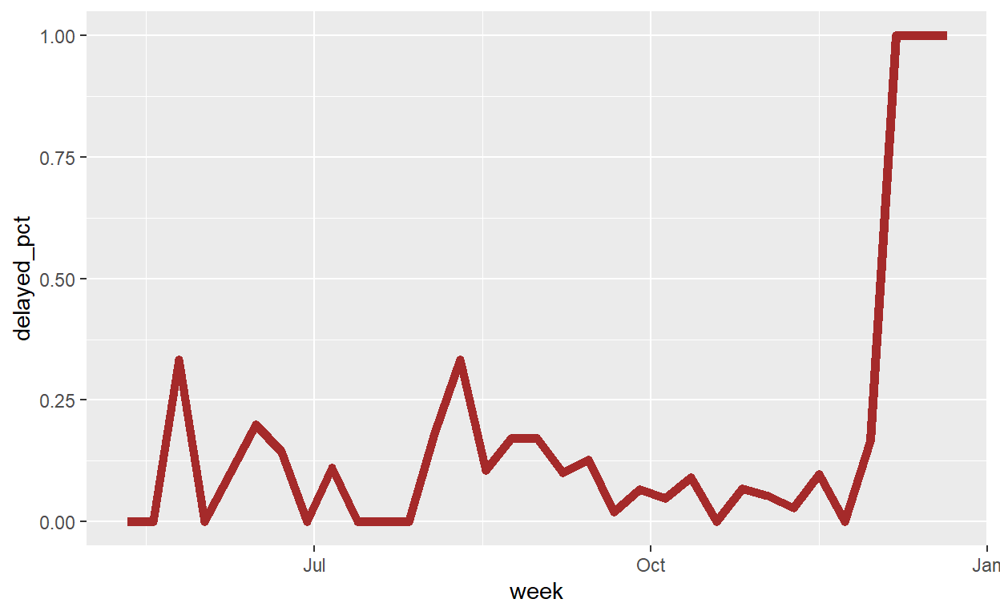
Now, apply the appropriate scale_*() function,
and include the argument labels = percent. Note
that when setting this argument equal to a function, you do not need to
include the parentheses at the end of percent().
ggplot(data = delay_1wk, mapping = aes(x = week, y = delayed_pct))+
geom_line(size = 2, color = "brown")+
scale_y_continuous(labels = percent)Plot labels
Static labels
Let us continue using the data frame and plot from the previous section:
ggplot(data = delay_1wk, mapping = aes(x = week, y = delayed_pct))+
geom_line(size = 2, color = "brown")+
scale_y_continuous(labels = percent)Add a caption that reads: “n = 663. Report produced on 2022-04-02. Data collected from 5 major hospitals in the epidemic-affected area. Last reported case on 2014-12-21. 7 cases missing date of onset.”
But! - Make each sentence start on a new line.
Click to read a hint
Add alabs() function, using caption =. Within
the quotes, place “\n” in each place where you want a newline to
appear.Click to see a solution (try it yourself first!)
ggplot(data = delay_1wk, mapping = aes(x = week, y = delayed_pct))+
geom_line(size = 2, color = "brown")+
labs(caption = "n = 663.\nReport produced on 2022-04-02.Data collected from 5 major hospitals in the epidemic-affected area.\nLast reported case on 2014-12-21.\n7 cases missing date of onset.")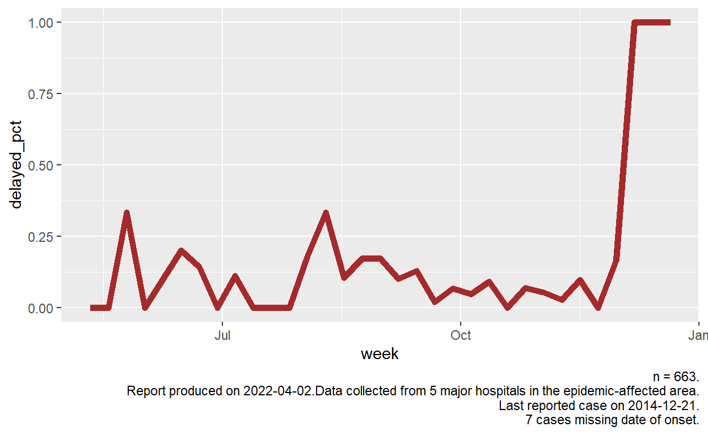
Dynamic labels
The caption as written will work… for this particular moment and dataset. But what happens if you get an updated dataset? The caption is static and will remain the same.
The {stringr} package contains the package str_glue(),
which allows us to embed code within character strings, so that
the strings will update with new data.
To use this function, first, wrap the character string within
str_glue(), like this: str_glue("n = 663").
This will print the static number 663.
To make it dynamically reflect the number of rows in the data frame
surv, you can insert curly brackets within the
quotation marks. Within the brackets, insert your R code, for
example, the function nrow()
str_glue("n = {nrow(surv)}")(Try running this in your R console)
Within the quotation marks, you can continue your writing, and even include other sections of code:
str_glue("n = {nrow(surv)} confirmed cases. There are {ncol(surv)} columns in the data frame")(Try running this in your R console)
Now you see the power of this… there are some other functions to help you craft an excellent caption:
unique()A {base} R function that returns the of unique values, such asunique(surv$district)- Combine this with
length()to return the number of unique values:length(unique(surv$district))
- Combine this with
Sys.Date()Returns the current time as per your computer. Do not put anything in the parentheses.
fmt_count()is a function from the package {epikit} that if provided a data frame and logical criteria, will return a nicely formatted statement of the number of observations. For example:fmt_count(surv, is.na(hospital))(try running this in your R console)
Now that you have these tools, revise your 4-sentence caption so that the numbers will all automatically update.
Click to see a solution (try it yourself first!)
ggplot(data = delay_1wk, mapping = aes(x = week, y = delayed_pct))+
geom_line(size = 2, color = "brown")+
labs(caption = str_glue("n = {nrow(surv)}.\nReport produced on {Sys.Date()}\nData collected from {length(unique(surv$hospital))-2} major hospitals in the epidemic-affected area.\nLast reported case on {max(surv$date_report, na.rm = TRUE)}.\n{fmt_count(surv, is.na(date_report))} cases missing date of onset and not shown."))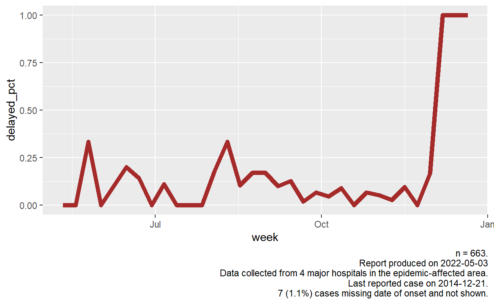
Did you catch that unique() will also count the values
NA and “Other”? You may want to subtract 2 from that
calculation.
Once your captions get very complex, you can arrange the
str_glue() in a different way, so that it is easier to read
and manage. The code is separated and placed towards the bottom, with
placeholders in the text itself. See this section of the Epi
R Handbook.
Theme elements
Themes are non-data design features (background, text size/color, etc).
Complete themes
These “complete themes” are easy to add.
# Try one of these...
+ theme_bw()
+ theme_classic()
+ theme_dark()
+ theme_gray()
+ theme_minimal()
+ theme_light()
+ theme_void()Try adding them to some of your former plots.
Try the argument base_size = 16 inside the theme
function, to quickly increase text sizes.
Which one do you prefer? Mentally bookmark to use later!
Micro-adjustments to themes
Micro-adjustments to the theme can be made with theme().
As these are mostly small layout and visual details we won’t go into
much detail here. More information is available in
the Epi R Handbook.
The syntax for themes takes time to learn and is not used often
enough to commit to memory for most R users. See this list
of feature-specific arguments. Or run, theme_get() in your
R window to get a list of all theme arguments in the console.
Copy and paste this example below into RStudio (theme micro-adjustments at the bottom). There is no need to type it, as that would take a long time. The purpose is just for your to see.
ggplot(data = surv,
mapping = aes(
x = age_years,
y = ht_cm,
color = gender)) +
geom_point(
alpha = 0.7) +
scale_color_brewer(
palette = "Pastel2",
na.value = "grey") +
labs(
title = "Height and age",
subtitle = "All hospitals",
x = "Age (years)",
y = "Height (cm)",
caption = "Fictional Ebola data",
color = "Gender"
) +
theme_classic(base_size = 16) +
theme(
legend.position = "bottom", # move legend to bottom
plot.title = element_text(color = "red", # title color
size = 20, # title font size
face = "bold"), # title typeface
axis.title.y = element_text(angle = 0)) # rotate y axis title to be horizontal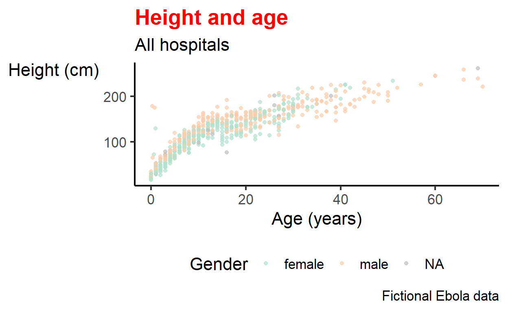
These theme elements follow a similar 2-part syntax much like
mapping = aes() where we pass a function to an argument of
a higher level function (here theme()).
Remember to add any adjustments after any pre-built themes
Some useful theme options are presented below:
theme() argument |
What it adjusts |
|---|---|
plot.title = element_text() |
The title |
plot.subtitle = element_text() |
The subtitle |
plot.caption = element_text() |
The caption (family, face, color, size, angle, vjust, hjust…) |
axis.title = element_text() |
Axis titles (both x and y) (size, face, angle, color…) |
axis.title.x = element_text() |
Axis title x-axis only (use .y for y-axis only) |
axis.text = element_text() |
Axis text (both x and y) |
axis.text.x = element_text() |
Axis text x-axis only (use .y for y-axis only) |
axis.ticks = element_blank() |
Remove axis ticks |
axis.line = element_line() |
Axis lines (colour, size, linetype: solid dashed dotted etc) |
strip.text = element_text() |
Facet strip text (colour, face, size, angle…) |
strip.background = element_rect() |
facet strip (fill, colour, size…) |
The main adjustments you are likely to make regularly are to do with
the plot legend.position =. Default options are
"top", "bottom", "left",
"right" and "none" (to hide the legend
completely).
The legend position can also be set more specifically with
c(x,y) where x and y refer to the position along the x or y
axis as a proportion of the total length (ie. bottom right is
c(1,0))
Most other theme elements can also be turned off using
element_blank() e.g. to turn off minor y-axis grid lines
and legend title:
Check your understanding of the basics of themes below:
End
Congratulations! You finished the entire module on ggplot! This is a difficult topic, but you now have all the essential tools to go forth and make many kinds of plots.